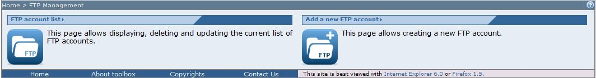
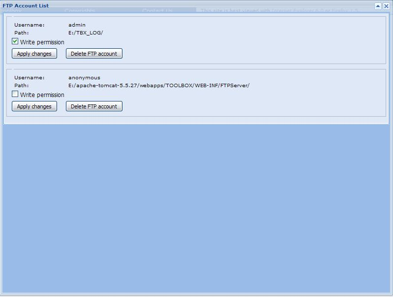

To list the active FTP accounts on the FTP server embedded in the TOOLBOX click on the "FTP Management" link toolbar. The browser should display

Click on the "List FTP accounts" section link.The browser should display the list of the active FTP accounts

.
For each account a specific section is provided, allowing the user to change write permission and delete the account itself.
To change the write permission, simply modify the checkbox and click on "Apply changes". The changes are applied immediately and doesn't need a restart of the FTP server.
To delete an account click on the "Delete FTP account" button. The user is deleted from the server list.